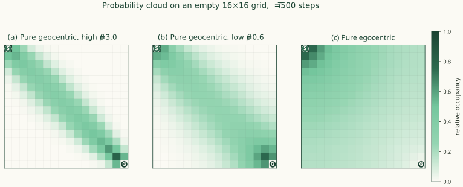
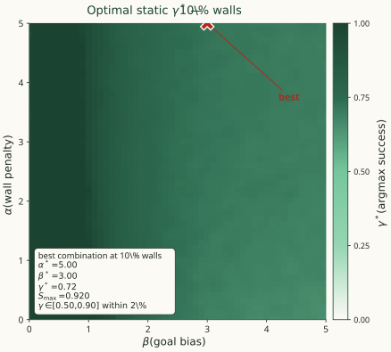
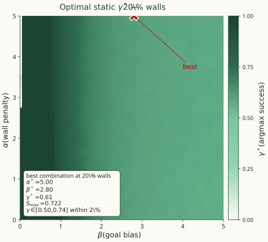
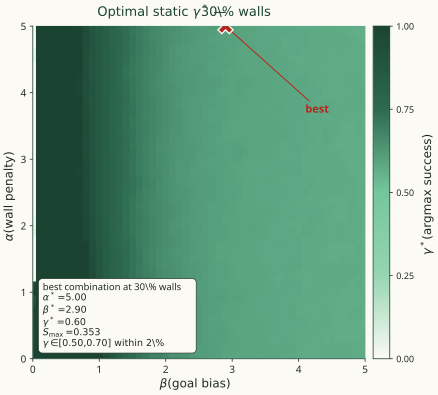
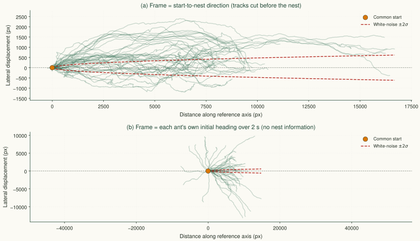
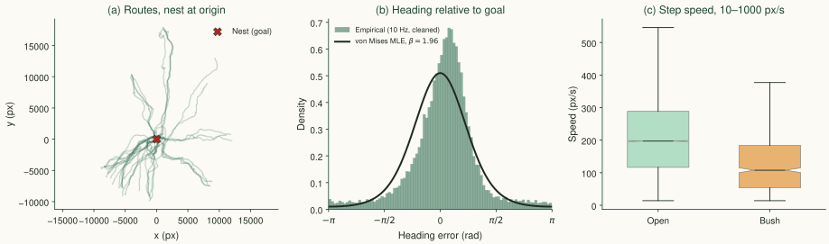
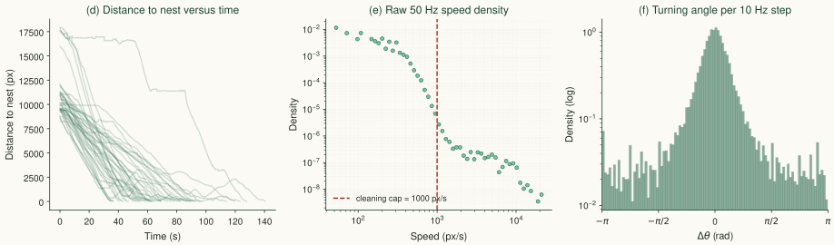
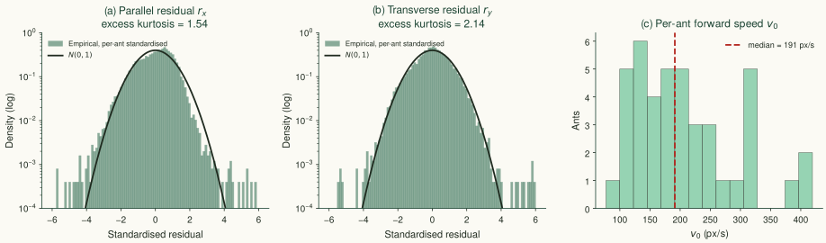
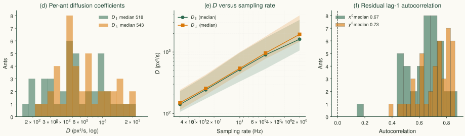
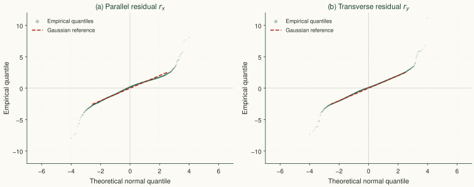

From Biological Principles to Macroscopic Dynamics
October 4, 2026
Agents must navigate complex, unseen environments efficiently. This requires balancing two conflicting objectives:
Exploitation (Geocentric)
Exploration (Egocentric)
The Core Question: How do we dynamically switch between these strategies (\(\gamma\)) to optimize survival and success?
1. Behavioral Policies
Derived via Constrained Optimization (MaxEnt)
2. Master Equation
Discrete Grid-World Probability Flow
3. Kramers-Moyal Expansion
Bridging the Discrete-to-Continuum Limit
4. Non-Linear Fokker-Planck Equation
Full Macroscopic PDE
5. Linearized Fokker-Planck Equation
Extracted via Small Angle Approximation (\(\theta \ll 1\))
6. Continuous First Passage Time (FPT)
1D Reduction: Quasi-2D assumption along the goal axis
(Agent fluctuates transversely but moves longitudinally)
7. Discrete First Passage Time
Biased Random Walk: Free Space vs. Annealed Disorder
8. Inverse Stochastic Optimal Control
Deriving Cost Functionals directly from the SDE
9. The Optimal Switching Problem
Criterion: success rate (conditional MFPT is survivorship-biased)
9. The Static-\(\gamma\) Landscape
\(\gamma^*\) interior (0.3–0.8), decreasing in \(\beta\); \(\gamma=1\) never optimal by success
10. Simulation Audit & Trap-Topology Mechanism
int32\(\to\)uint8 loader bug \(\Rightarrow\) striped 9.4% mazes (artificial \(\gamma^*=1\))
11. Dynamic \(\gamma\): HJB & Soft Bellman
Optimal switching is a Sigmoid of a switching function (Soft Bang-Bang)
12. Information Ceiling & Memory Tiers
Switching function needs global \(V\); M0/M1/M2 augmentations
13. Symbolic & Algebraic Verification
Continuum limits and HJB minimization checked via Mathematica
14. Monte Carlo FPT Ensembles
Regime sweeps at true density; success-rate and MFPT landscapes
15. Pipeline Validation: Synthetic Benchmark
Pooled MLE recovers \(\kappa\) within 1.1%; all parameters within 4%
16. Biological Grounding: Wild Ant Homing
Kinematics \((v_0, \kappa, D_\parallel/D_\perp)\), inversion \(\beta\) ; open vs. clutter
Discrete max-entropy policies → Fokker–Planck continuum → inverse recovery of the cost the agent minimizes.
Biological strategies are mathematically optimal solutions derived via the Maximum Entropy Principle.
Geocentric (Goal Pull)
Maximize goal alignment \(\phi_a\)
\[\pi_G(a|s) = \frac{1}{Z_G}\exp(\beta\,\phi_a)\]
\(\beta\): Goal pull strength
Egocentric (Repulsion)
Minimize obstacle overlap \(O_a\)
\[\pi_E(a|s) = \frac{1}{Z_E}\exp(-\alpha\,O_a)\]
\(\alpha\): Obstacle repulsion strength
The Combined Mixture Policy:
\[\pi(a|s) = {\color{#b3261e}\gamma}\,\pi_G(a|s) + (1-{\color{#b3261e}\gamma})\,\pi_E(a|s)\]
Where \(\gamma \in [0,1]\) is the dynamic switching parameter.
Change the parameters. Watch the behavior.
Adjust the mixture weight \(\gamma\), drive strengths \(\alpha\) and \(\beta\), and population density to see how the agent’s trajectory changes.
How does this discrete policy translate to the continuous movement of a probability cloud?
Fokker-Planck Equation:
\[\frac{\partial P}{\partial t} = \underbrace{-\nabla\cdot\left[\bar M^{(1)}(\vec r)\,P\right]}_{\text{Drift}} + \underbrace{\frac12\nabla\nabla:\left[\bar M^{(2)}(\vec r)\,P\right]}_{\text{Diffusion}}\]
Assuming a small angle to the goal (\(\theta \ll 1\)), the macroscopic PDE is:
\[\frac{\partial P}{\partial t} = -\partial_x\left[{\color{#1f5fa8}V_x}\,P\right] - \partial_y\left[{\color{#1f5fa8}V_y}\,P\right] + D_\parallel\,\partial_{xx}P + D_\perp\,\partial_{yy}P\]
Explicit Effective Velocities (Drift):
\[\begin{aligned} {\color{#1f5fa8}V_x(\mathbf r)} &= \underbrace{\gamma\epsilon\tanh(\beta/2)}_{v_0\ \text{(Forward Advection)}} - \underbrace{\frac{{\color{#b3261e}(1-\gamma)}\,\alpha\epsilon^2}{2}\,\partial_x O(\mathbf r)}_{\text{Obstacle Repulsion}} \\[1ex] {\color{#1f5fa8}V_y(\mathbf r)} &= \underbrace{\left[\frac{\gamma\epsilon\beta}{4\cosh^2(\beta/2)}\right]\theta(\mathbf r)}_{\kappa\theta\ \text{(Transverse Restoring)}} - \underbrace{\frac{{\color{#b3261e}(1-\gamma)}\,\alpha\epsilon^2}{2}\,\partial_y O(\mathbf r)}_{\text{Obstacle Repulsion}} \end{aligned}\]
The probability cloud spreads according to the Effective Diffusion Tensor:
\[D_\parallel = \underbrace{\frac{\gamma\epsilon^2\cosh\beta}{2(1+\cosh\beta)}}_{\text{Geocentric}} + \underbrace{\frac{{\color{#b3261e}(1-\gamma)}\,\epsilon^2}{2}}_{\text{Egocentric}}\]
\[D_\perp = \underbrace{\frac{\gamma\epsilon^2}{2(1+\cosh\beta)}}_{\text{Geocentric}} + \underbrace{\frac{{\color{#b3261e}(1-\gamma)}\,\epsilon^2}{2}}_{\text{Egocentric}}\]
Key Limiting Behaviors:

(a) Pure geocentric, high \(\beta\). Sharp goal bias. The cloud is a tight cigar along the goal diagonal: strong forward drift \(v_0\), small transverse noise \(D_\perp\).
(b) Pure geocentric, low \(\beta\). Same goal-directed drift, wider cloud. Transverse restoring \(\kappa\) is weak, so off-axis steps survive.
(c) Pure egocentric. No goal bias, no drift. The cloud spreads isotropically from the start. \(v_0 = \kappa = 0\) and \(D_\parallel = D_\perp = \epsilon^2/2\).
Given these macroscopic dynamics…
What objective function is the agent actually minimizing to yield these policies, and what does it tell us about optimal \(\gamma\)?
To understand how to tune \(\gamma\), we must ask: What is the agent actually optimizing?
We map the macroscopic Fokker-Planck dynamics back to a microscopic Stochastic Differential Equation (SDE):
\[d\mathbf r_t = \mathbf V(\mathbf r_t)\,dt + \mathbf B\,d\mathbf W_t\]
Using Girsanov’s Theorem and the Hamilton-Jacobi-Bellman (HJB) equation, we work backwards from the known velocity field \(\mathbf V\) to find the exact State Cost \(q(x,y)\) the agent minimizes.
The exact HJB state cost reveals the physical penalties the agent avoids:
\[q(x,y) = \underbrace{\frac{1}{4D_\parallel}\left(v_0 - c\,\partial_x O\right)^2 + \frac{1}{4D_\perp}\left(\kappa\theta - c\,\partial_y O\right)^2}_{\text{1. Quadratic Control Effort}} + \underbrace{\frac{\kappa}{2}\,\partial_y\theta}_{\text{2. Angular Penalty}} - \underbrace{\frac{c}{2}\,\nabla^2 O}_{\text{3. Laplacian Repulsion}}\]
Penalizes fighting against diffusion noise to maintain speed/direction.
Penalizes rapid transverse changes in goal angle (encourages smooth arcs).
\(\nabla^2 O\) penalizes sharp convex corners and navigation into tight, dense traps.
To map the control landscape, we expand the coefficients back to the fundamental agent parameters: goal bias (\(\beta\)), repulsion (\(\alpha\)), and the mixing weight (\(\gamma\)).
Active Drift & Repulsion
\[\begin{aligned} v_0 &= \gamma\epsilon\tanh\left(\frac{\beta}{2}\right) \\[1ex] \kappa &= \frac{\gamma\epsilon\beta}{4\cosh^2(\beta/2)} \\[1ex] c &= \frac{{\color{#b3261e}(1-\gamma)}\,\alpha\epsilon^2}{2} \end{aligned}\]
The obstacle penalty \(c\) is proportional to the exploration parameter \((1-\gamma)\).
Anisotropic Diffusion Noise
\[\begin{aligned} D_\parallel &= \frac{\gamma\epsilon^2\cosh\beta}{2(1+\cosh\beta)} + \frac{{\color{#b3261e}(1-\gamma)}\,\epsilon^2}{2} \\[2ex] D_\perp &= \frac{\gamma\epsilon^2}{2(1+\cosh\beta)} + \frac{{\color{#b3261e}(1-\gamma)}\,\epsilon^2}{2} \end{aligned}\]
Role of \(\gamma\)
As \(\gamma \to 1\), \(c \to 0\) (the Laplacian curvature penalty vanishes) and noise becomes anisotropic (\(D_\parallel \gg D_\perp\)). As \(\gamma \to 0\), active drift vanishes (\(v_0, \kappa \to 0\)) and the noise becomes isotropic.
By evaluating the Soft-Bellman equation, the exact discrete reward \(r_\gamma(s)\) is:
\[r_\gamma(s) = \underbrace{V(s) - \mathbb{E}[V(s')]}_{\text{Value Drift}} + \frac{1}{\eta}\sum_{s'}\pi_\gamma^*\,\underbrace{\log\left(\frac{\gamma}{Z_G}e^{\beta V_{\text{goal}}(s')} + \frac{1-\gamma}{Z_E}e^{-\alpha O(s')}\right)}_{\text{Mixture Interference (Log-Sum-Exp)}}\]
The Log-Sum-Exp “Smooth Max”
Because the control cost is a Log-Sum-Exp of the goal (\(\beta\)) and obstacle (\(\alpha\)) terms, the agent does not pay the full cost of both behaviors simultaneously. It acts as a smooth maximum, representing the minimal cognitive/control effort to satisfy the dominant drive.
How success probability selects a mixing weight when \(\gamma\) is held constant across the maze.
Stripping away biological artefacts, the core problem is an exploration vs. exploitation tradeoff in quenched disorder.
Exploitation — “geocentric”
Biased random walk.
Exploration — “egocentric”
Symmetric random walk.
Open problem. How should the two processes be optimally combined to minimise first-passage time and maximise survival?
Environment
Policy
\[\pi(a\mid s) = \gamma\,\pi_G(a\mid s) + (1-\gamma)\,\pi_E(a\mid s)\]
held constant in space and time throughout a single sweep cell.
Sweep
Score used to pick \(\gamma^*\)
\[S(\gamma) = \underbrace{\text{success rate}}_{\text{primary}} \;-\; \lambda\,\frac{\text{capped MFPT}}{T}\]
with \(\lambda = 0.2\). Failures count as \(T\), so a short MFPT on a lucky survivor cannot outrank a reliable strategy.
Why the composite metric. Success rate alone leaves ties across \(\gamma\). Capped MFPT alone suffers survivorship bias. The composite keeps success dominant and only uses MFPT to break the ties in favour of the faster mixture.



How to read the plot
What the legend says. The colour is \(\gamma^*\), not the score. A point being dark does not mean the agent does well there; it means the best mixture at that \((\alpha,\beta)\) leans heavily on goal pull. Bright means the best mixture leans on obstacle avoidance. The score itself is in the annotation box.
Three observations that hold in every density panel.
A narrow stripe at \(\beta \approx 0\) is forest-dark. With essentially no goal bias, any repulsion at all biases the mixture toward pure exploitation (\(\gamma^* \to 1\)), because avoiding walls without a goal just wastes steps.
The bulk of the map sits in the middle band, \(\gamma^* \approx 0.5\)–\(0.6\). Once the goal drive is meaningful (\(\beta \gtrsim 0.5\)), the optimal mixture is close to even, and it does not move much as \(\alpha\) grows. The wall penalty saturates because the softmax policy is already near-deterministic for \(\alpha \gtrsim 3\).
The best cell sits in the upper-right region: high \(\beta\) and high \(\alpha\) together, with \(\gamma^*\) in the low 0.6s. Success requires both strong goal bias and strong avoidance — one without the other is not enough.
Caveat. In some panels the best cell lies on the boundary of the swept range (\(\alpha = 5\)), so the true optimum may sit beyond the grid. The observations above are about the shape of the map, not the exact corner value.
–>
\(\gamma \to 1\) (pure goal)
\(\gamma \to 0\) (pure avoidance)
Interior balance. An intermediate \(\gamma\) keeps enough goal-push to make progress and enough avoidance to slide along walls. The balance point is set by \(\beta\) (sharper goal drive \(\Rightarrow\) more sticking risk \(\Rightarrow\) lower \(\gamma^*\)) and by the horizon (tighter budget \(\Rightarrow\) speed over safety \(\Rightarrow\) higher \(\gamma^*\)).
State-dependent \(\gamma(\mathbf r)\) from HJB and soft Bellman: the sigmoid law and its information ceiling.
The static sweep showed that no single constant works everywhere. We now ask: what is the optimal \(\gamma(\mathbf r)\) as a function of position?
Two independent formulations give the same answer: sigmoid law
\[ \gamma^*(\mathbf r)=\sigma\left(-\frac{S}{\eta}\right), \quad S=\nabla V\cdot(\mathbf v_G-\mathbf v_E) \]
\[ \gamma^*(s)=\sigma\left(-\frac{s_d}{\eta_d}\right), \quad s_d=Q_G(s)-Q_E(s) \]
Reading the law. When the goal direction is cheaper than the wall direction, \(\gamma^* \to 1\) (exploit). When the wall penalty dominates, \(\gamma^* \to 0\) (explore). The temperature \(\eta\) smooths the switch.
Controlled diffusion — the control enters the drift only:
\[\begin{aligned} dx_t &= \big[{\color{#b3261e}\gamma_t}\,v_0 - (1-{\color{#b3261e}\gamma_t})\,c_E\,\partial_x O\big]\,dt + \sqrt{2D_\parallel}\,dW_{x,t}\\ dy_t &= \big[{\color{#b3261e}\gamma_t}\,\kappa\,\theta - (1-{\color{#b3261e}\gamma_t})\,c_E\,\partial_y O\big]\,dt + \sqrt{2D_\perp}\,dW_{y,t} \end{aligned}\]
Entropy-regularised running cost: \(L(\gamma) = 1 + \eta\,[\gamma\ln\gamma + (1-\gamma)\ln(1-\gamma)]\), where \(\eta\) is the price of randomness.
Steady-state HJB minimised over \(\gamma\) (with \(\mathbf p = \nabla V\)):
\[\gamma^*(\mathbf r) = \sigma\!\left(-\frac{S}{\eta}\right),\qquad S = p_x(v_0 + c_E\,\partial_x O) + p_y(\kappa\theta + c_E\,\partial_y O).\]
Discrete soft Bellman gives the same law: \(\gamma^*(s) = \sigma(-s_d/\eta_d)\), with \(s_d = Q_G(s) - Q_E(s)\).
What the sigmoid law needs
What the agent sees
Aliased observations. No memoryless reactive policy can realise the sigmoid. The law is the full-information optimum, a benchmark rather than a controller.
One internal ODE per tier. Same sigmoid law, richer input.
Because we model ants as Markov (memoryless) for tractability, the dynamic law is a side result. The biologically interesting question is how much memory an ant needs before it can approximate the global optimum. That question is open.
Systematic survey of insect-homing datasets and the four-pillar gap this work fills.
Sources I investigated for real ant homing trajectories. Only CATER is usable out of the box; CoffeeBeetles is usable after contacting the authors (S3 artifact 404).
| Source (species) | Repository contains | Direct use? | Verdict |
|---|---|---|---|
| CATER ’23 (C. velox) | 151 videos; per-frame x, y, heading | Yes | In use |
| CoffeeBeetles ’20 (S. galenus) | 10 landmark-free PI tracks on S3 | S3 returns 404 | Contacted |
| Bollig ’24 (C. fortis) | Summary XLSX only | No raw (x, y, t) | Reject |
| McCreery ’16 (P. longicornis) | Group (x, y, t) + obstacle files | Collective ≠ solitary | Rejected |
| Pfeffer ’16a (C. fortis) | Turning points only | No full paths | Limited |
| Pfeffer ’16b (C. fortis) | Video only (134 MB) | Needs CV digitization | Rejected |
| Edmond ’26 (C. fortis) | Outcome + tortuosity statistics | No trajectories | Limited |
Data usable after processing, plus baselines and reserves.
| Source (species) | Repository contains | Preprocessing | Role |
|---|---|---|---|
| Wystrach ’20 (Melophorus, Cataglyphis) | Full world-coord paths; trap trials; scan positions | Phase segmentation; goal = route endpoint | Primary — α + γ + η |
| antGait ’23 (ants) | Tracks + speed estimates + MATLAB | Unit / frame-rate decode | Baseline — v₀, D |
| Hunt ’15 (T. albipennis) | 36 no-goal tracks, 45 min | None | Baseline — no-goal D |
| Wu ’22 (3 species) | Colony tracks, indoor + outdoor | Tracking QC | Reserve |
| Bumblebee PI ’22 (walking) | Claimed homing tracks (preprint) | Availability unverified | Reserve |
| Carlesso ’24 (P. longicornis) | Collective obstacle navigation | Availability unverified | Reserve |
The core gap. The machinery above (Fokker-Planck limits, inverse optimal control, anisotropic diffusions fitted to insect data) exists in separate literatures, but no paper applies all four to real ant navigation. Conversely, the biology literature reasons about optimal cue weighting informally and never recovers a cost functional or derives a policy from an HJB equation.
Peleg & Mahadevan (2016) → Mori & Mahadevan (2025)
Same geocentric/egocentric switching. Real Pontryagin optimal control.
Forward only. Dung beetle. No inverse RL, no anisotropic diffusion, no real-data coefficient recovery.
Webb / CATER / Wystrach groups
Mechanistic neural-circuit and snapshot models; stochastic noise present.
No cost-functional recovery. No optimal-control derivation.
Straw & Lochner (2024, Freiburg)
RL-inspired insect navigation framework.
Explicitly proposes inverse RL to recover insect Q-functions as future work — confirming the gap.
Movement ecology / SDE fitting
(Khaldy 2019; Featherstone 2026; Codling; Turchin)
Fit drift and diffusion to real tracks.
No control theory. No goal/obstacle mixture. No optimal switching.
| Research lineage | Primary focus & specific theories |
|---|---|
| Neuroethology & circuits (Webb; Wystrach, Clément; Mangan; Haalck) |
Webb: neural circuits (central complex, steering, head direction). Wystrach: intrinsic oscillators, snapshot matching. Mangan: Bayesian cue weighting. Haalck: 3D tracking infrastructure. No cost-functional recovery or optimal control. |
| Biophysics / forward control (Dacke; Mahadevan: Peleg, Mori; Khaldy) |
Peleg/Mori: forward optimal control for geo/ego switching. Khaldy/Dacke: biased-correlated random walks fitted to beetle tracks. Forward-only. No inverse RL, no anisotropic diffusion tensors. |
| Movement ecology (Featherstone, Codling, Turchin) |
Empirical SDE fitting (drift, isotropic diffusion, tortuosity) via MSD and autocorrelation. No control theory, no goal/obstacle mixture, no optimal switching. |
| RL-inspired frameworks (Straw & Lochner 2024) |
Conceptual RL models for insect navigation. Inverse RL to recover insect Q-functions proposed strictly as future work. |
| Pure control theory (Todorov, Dvijotham) |
LMDP, KL-control, and inverse optimal control mathematics. Entirely theoretical. No application to biological navigation data. |
Real Cataglyphis homing trajectories, coefficient extraction, and residual diagnostics.
Data. 42 Cataglyphis velox homing tracks, 50 Hz, pixel coordinates. Per-frame flags: cookie (\(=1\) after food pickup) and bush.
Homing phase. Rows with cookie = 1; the first 50 frames (1 s) are discarded. Start \(S\) = first remaining position; goal \(G\) = last position (nest).
Goal frame (translation + rotation). \(D = |G - S|\), \(\mathbf u_\parallel = (G-S)/D\), \(\mathbf u_\perp = \mathbf u_\parallel\) rotated \(+90^\circ\):
\[x' = (\mathbf r - S) \cdot \mathbf u_\parallel, \qquad y' = (\mathbf r - S) \cdot \mathbf u_\perp.\]
\(S \mapsto (0,0)\), \(G \mapsto (D,0)\); distances are preserved. Goal angle: \(\theta = \arctan2(-y',\, D - x')\).
Steps. Resampled at 10 Hz (\(\Delta t = 0.1\) s) then differenced. Kept if speed is 10–1000 px/s, bush flag is 0 at both endpoints, and remaining distance to the nest exceeds 1500 px.
Estimators.
Three routes to \(\beta\)
Synthetic validation. On simulated white-noise tracks the pipeline recovers \(\kappa, v_0, D_\parallel, D_\perp\) to within about 1–3% at 50 Hz, and \(D\) is constant from 50 to 5 Hz. If the real ants behave the same, the estimator is not the source of the sampling dependence.

(a) Axis = start-to-nest direction. Each track is translated to a common origin and rotated so the goal lies on the horizontal axis, then cut before the ant reaches the nest (so the end is not pinned on the axis). Red dashed = \(\pm 2\sigma\) envelope of a white-noise walk moving at \(v_0 = 191\) px/s with \(D_\perp = 543\) px²/s.
(b) Axis = each ant’s own initial heading over the first 2 s. No nest information is used anywhere in the construction. If the tracks did not home, they would fan out symmetrically; the outward drift in (a) that stays inside the envelope is what a goal-directed correlated random walk looks like.
Alt-click to zoom.

(a) Routes. Homing segments translated so the nest sits at the origin; no rotation. What it shows: the tracks come from all compass directions and converge on the nest.
(b) Heading relative to goal. Step direction minus direction-to-nest, wrapped to \([-\pi, \pi]\); 21,752 cleaned 10 Hz steps pooled. What it shows: a sharp peak at 0 with heavier tails than a single von Mises — the ants are goal-biased but with occasional large errors.Negative = turned right of the nest, positive = turned left.
(c) Speed by terrain. Step length / \(\Delta t\) at 10 Hz, split by the bush flag. What it shows: a clear terrain effect (medians ≈ 200 px/s open, ≈ 110 px/s in bush).

(d) Convergence. Straight-line distance to the nest versus time at 50 Hz, one curve per ant. What it shows: monotone decrease with visible flat segments (pauses).
(e) Raw speed density at 50 Hz. Unfiltered positive step speeds pooled over all ants, log–log axes. What it shows: a main population well below the cleaning cap, plus a separate low-density glitch tail above it.
(f) Turning angle per 10 Hz step. Difference between consecutive step directions. What it shows: a narrow core at 0 with broad tails — steps are on average straight but turns are not rare.
All quantities use the cleaned 10 Hz steps in the goal frame, computed per ant.

(a) Parallel residual. Pooled standardised \(r_x\) against \(N(0,1)\), log y-axis so the tails are visible. What it shows: Gaussian core, heavier tails (excess kurtosis 1.54).
(b) Transverse residual. Same construction for \(r_y\). What it shows: slightly heavier tails than the parallel case (excess kurtosis 2.14).
(c) Per-ant forward speed. Distribution of \(v_0\) across 42 ants. What it shows: a broad spread (roughly 80–420 px/s) with a median around 190 px/s.

(d) Diffusion coefficients per ant. \(D_\parallel = \mathrm{Var}(\Delta x')/(2\Delta t)\) and \(D_\perp = \mathrm{Var}(r_y)/(2\Delta t)\), log-spaced bins. What it shows: medians ≈ 518 and ≈ 543 px²/s; the two distributions overlap heavily.
(e) \(D\) versus sampling rate. Each track resampled at 50/25/10/5/2 Hz and \(D\) recomputed. What it shows: \(D_\parallel\) rises from ~141 to ~1611 px²/s as sampling slows down, \(D \propto \Delta t^{0.76}\). A white-noise SDE would give a flat line, so the ants are persistent at these timescales.
(f) Lag-1 autocorrelation of residuals. What it shows: medians of 0.67 and 0.73 for parallel and transverse; white noise would give 0. The correlation is the same persistence seen in (e).

(a) Parallel residual, Q–Q. Pooled standardised \(r_x\) sorted against theoretical standard-normal quantiles; the dashed red line is the Gaussian reference.
(b) Transverse residual, Q–Q. Same construction for \(r_y\).
What it shows. Points follow the reference line for \(|z| \lesssim 2.5\) in both panels. Beyond that, parallel residuals reach roughly \(\pm 8\) and transverse residuals about \(-7.5\) and \(+11\). This is the heavier-than-Gaussian tail already indicated by the excess kurtosis.
Reading it for the model. The Gaussian SDE is a good approximation inside \(\pm 2.5\sigma\); the tail behaviour needs either a heavier-tailed noise or a state-dependent diffusion.
Open-space homing, 42 ants, 10 Hz. Median over the 42 ants; brackets give the 95% bootstrap CI, obtained by resampling ants with replacement 2000 times
| Parameter | Estimate | Note |
|---|---|---|
| \(v_0\) (px/s) | 191 [163, 223] | robust |
| \(\kappa\) (px/s) | 13 [-5, 34] | CI includes 0 |
| \(D_\parallel\) (px²/s) | 518 [444, 760] | |
| \(D_\perp\) (px²/s) | 543 [461, 756] | |
| \(D_\parallel/D_\perp\) | 0.95 | isotropic |
| \(\beta\) (headings) | 2.04 [1.72, 2.43] | |
| \(\beta\) (\(\kappa/v_0\)) | 4.1 [2.8, 7.2] | wide CI |
| \(\beta\) (\(D_\parallel/D_\perp\)) | undefined | ratio \(<1\) |
What this implies. A constant-\(D\) white-noise position SDE is misspecified at 10 Hz: it cannot reproduce the sampling dependence or the residual autocorrelation. The model is a useful leading-order description inside the noise core; a heading-level SDE with persistent noise is the natural next step.
Data pipeline
cookie = 1, discard the first 1 s.Consistency checks
What is robust. Forward speed, heading concentration toward the goal, and the persistence of residuals across all sampling rates. What is not. A transverse restoring with CI containing 0, and an anisotropic diffusion tensor (\(D_\parallel/D_\perp \approx 0.95\), i.e. isotropic within CI).
Hierarchical Navigation